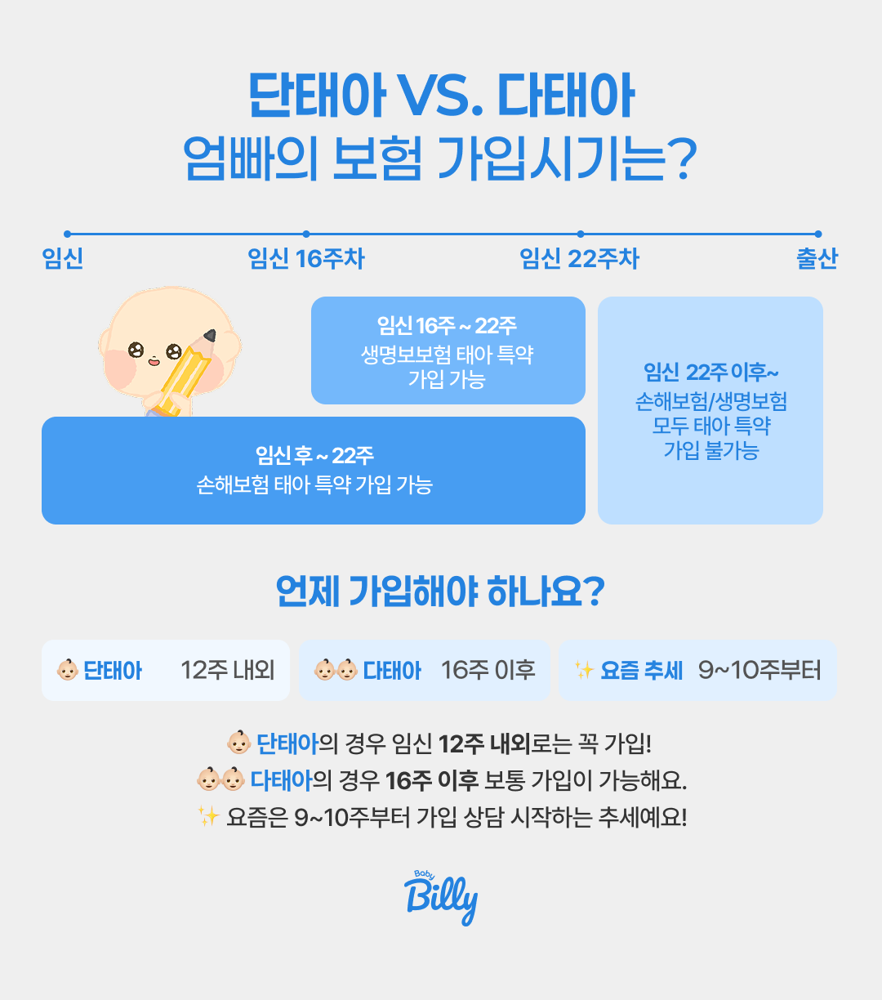
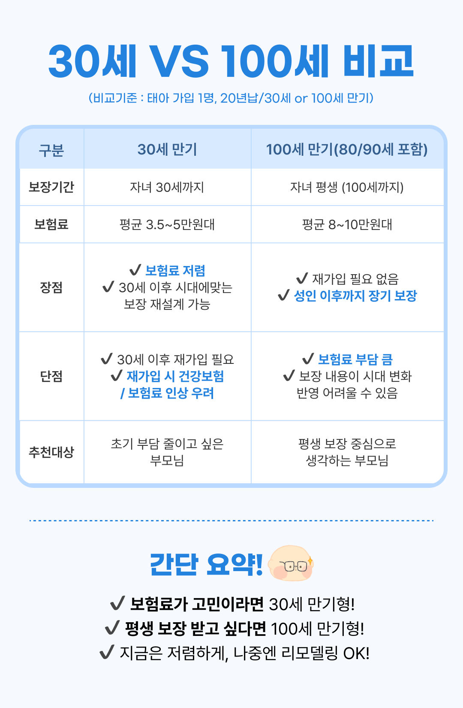
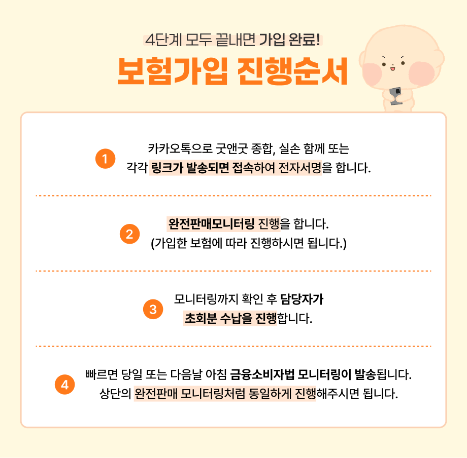

💰 2026년 5월 기준
태아보험 보험료
솔직하게 얼마예요?
실제 금액 총정리
월 4만 원짜리도 있고 20만 원짜리도 있어요. 차이가 나는 이유와 내 상황에 맞는 보험료를 찾는 방법까지 솔직하게 정리했어요.
 💬 내 상황 맞춤 보험료 무료로 확인하기
여러 보험사 설계서 한 번에 비교
💬 내 상황 맞춤 보험료 무료로 확인하기
여러 보험사 설계서 한 번에 비교
월 4만 원짜리도 있고 20만 원짜리도 있어요. 차이가 나는 이유와 내 상황에 맞는 보험료를 찾는 방법까지 솔직하게 정리했어요.
💬 내 상황 맞춤 보험료 무료로 확인하기
여러 보험사 설계서 한 번에 비교
같은 태아보험인데 왜 어떤 분은 월 5만 원이고 어떤 분은 월 18만 원일까요? 아래 5가지 중 어떤 조합을 선택하느냐에 따라 금액이 크게 달라져요.
가장 큰 변수예요. 100세 만기는 30세 만기보다 보험료가 1.5~2.5배 비싸요.
무해지환급형은 표준형보다 20~40% 저렴해요. 해지 환급금이 없는 대신 보험료를 아낄 수 있어요.
기본 특약만 넣으면 저렴하지만, 특약을 하나씩 추가할수록 보험료가 올라가요. 특약 1개에 수천~수만 원 차이가 나기도 해요.
같은 특약이라도 보험사마다 가격이 달라요. 2~3개사 설계서를 꼭 비교해 보세요.
주수가 늦어질수록 선택 가능한 특약이 줄어들어요. 보험료보다 '보장 범위 축소'가 더 아까워요.
💡 핵심: 보험료에 가장 큰 영향을 미치는 건 만기 선택이에요. 30세 만기를 선택하는 것만으로도 월 보험료를 절반 가까이 줄일 수 있어요.
아래 금액은 국내 주요 손해보험사 기준 참고 범위예요. 특약 구성에 따라 달라지니 정확한 금액은 설계서로 확인하세요.
※ 2026년 기준. 보험사·특약 구성에 따라 다름.
⚠️ 참고하세요: 인터넷에 나오는 "월 3만 원대" 태아보험은 보장이 매우 제한적이에요. 실제로 도움이 되는 보장을 갖추려면 최소 월 5만 원 이상은 필요해요.
생명보험과 손해보험은 보험료뿐만 아니라 보장 구조도 달라요. 선택 전에 꼭 비교해 보세요.
| 구분 | 생명보험사 | 손해보험사 ⭐ |
|---|---|---|
| 30세 만기 평균 | 월 5~9만 원 | 월 4~8만 원 |
| 100세 만기 평균 | 월 9~15만 원 | 월 10~22만 원 |
| 실손 담보 | 별도 부착 | 기본 포함 가능 |
| 선천이상 보장 기간 | ~16주 | ~22주 |
| 보장 방식 | 정액 지급 위주 | 실손 + 정액 복합 |
※ 2026년 기준. 상품에 따라 다를 수 있어요.
💡 결론: 실손과 선천이상 보장이 중요한 태아보험에서는 손해보험사를 선택하는 분들이 훨씬 많아요. 베이비빌리 상담 고객의 약 70%가 손해보험을 선택해요.
직접적인 보험료 인상보다 선택 가능한 특약이 줄어드는 것이 더 큰 문제예요. 나중에 가입하면 같은 돈을 내고 더 적은 보장을 받게 될 수 있어요.

생명·손해보험 모두 선천이상 담보 포함 전 특약 선택 가능. 보험료도 최저 수준이에요.
손해보험 기준 대부분의 특약 선택 가능해요. 생명보험은 일부 제한이 생겨요.
선천이상 담보 추가 불가. 기본 특약 위주로만 구성 가능하고, 일부 보험사에선 가입을 거절하기도 해요.
대부분 보험사에서 거절해요. 출생 후 어린이보험으로 가입하면 신생아 특약이 누락돼요.
✅ 결론: 임신 확인 후 되도록 빨리, 늦어도 22주 이전에 가입하는 게 보험료와 보장 모두에서 유리해요.
태아보험에서 가장 많이 받는 질문이에요. 보험료 차이는 크지만, 보장 방식도 완전히 달라서 단순 비교는 어려워요.

| 구분 | 30세 만기 | 100세 만기 |
|---|---|---|
| 월 보험료 (무해지) | 월 4~8만 원 | 월 10~18만 원 |
| 월 보험료 (표준형) | 월 7~12만 원 | 월 15~22만 원 |
| 보장 기간 | 출생~30세 | 출생~100세 |
| 만기 후 처리 | 재가입 필요 | 별도 재가입 없음 |
| 성인 보장 (암·뇌 등) | ❌ 미포함 | ✅ 포함 |
| 이런 분께 추천 | 예산 제한, 어린 시절 집중 보장 | 성인 보장까지 한 번에 |
💡 베이비빌리 추천: 예산이 빠듯하다면 30세 만기 무해지환급형으로 시작하세요. 보험료가 절반 수준이고, 30세 이후에 그 시대에 맞는 보장으로 재설계할 수 있어요.
보험료에 직접적으로 영향을 주는 또 다른 선택이에요. 무해지환급형을 선택하면 20~40% 저렴하지만 조건이 있어요.
| 구분 | 표준형 (환급형) | 무해지환급형 |
|---|---|---|
| 보험료 | 높음 (기준) | 20~40% 저렴 |
| 중도 해지 환급금 | 있음 | 없음 (0원) |
| 만기 환급금 | 있음 | 있음 (동일) |
| 이런 분께 추천 | 혹시 해지 가능성 있는 분 | 만기까지 유지 자신 있는 분 |
⚠️ 주의: 무해지환급형은 납입 완료 전 해지하면 환급금이 0원이에요. 경제적 여건이 유동적이라면 표준형이 더 안전해요. 무해지는 "끝까지 유지할 자신 있는 분"만 선택하세요.
상황별로 가장 유리한 조합을 전문가가 직접 설계해 드려요.
📋 무료 맞춤 설계 받기같은 보장이라도 아래 5가지를 잘 활용하면 월 수만 원을 아낄 수 있어요.

✅ 전문가 비교가 유리한 이유: 전문가를 통하면 여러 보험사 설계서를 한 번에 비교할 수 있어요. 보험료는 직접 가입과 동일하지만, 불필요한 특약을 빼고 필수 특약만 구성해 줘서 실제 납입 금액이 더 저렴해지는 경우가 많아요. 베이비빌리 베동 커뮤니티와 실제 전문가 상담에서는 비교 상담이 항상 첫 번째로 권장돼요. 가입은 카톡으로만도 가능해요! 🍀
30초 상담 신청으로 여러 보험사 설계서를 무료로 받아볼 수 있어요.
태아보험 전문 상담사가 최적의 보험료 조합을 찾아드려요.
 💬 무료 보험료 비교 상담 신청
💬 무료 보험료 비교 상담 신청